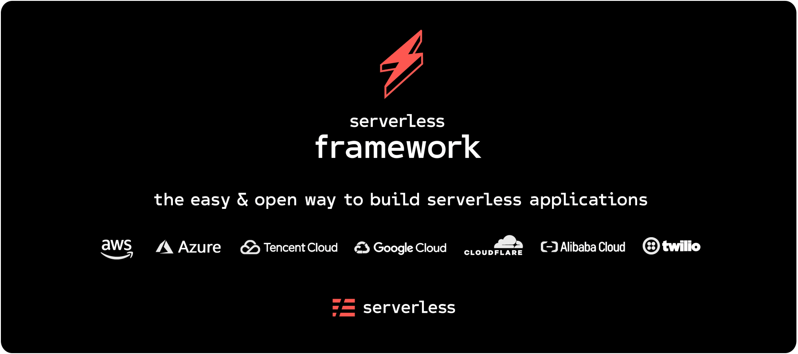

AWS Serverless
Selenium Tests
Who am I?
- Perpetual beta learner
- QA Manager with groundwork experience
- Test architect who enjoys the craft

Table of contents
-
Migration Away From Traditional Infrastructure
-
Serverless Architecture and Framework
-
Selenium Tests Solution
-
Managing Your SLS Solution
-
Q&A
This talk is NOT about:
selling AWS
or Serverless framework, for that matter
"new" futuristic ideas
solving ALL specific problems
Traditional Infrastructure And Setup
We have built over the years:
Jenkins farm
on AWS EC2 intances
Complex pipelines for Web, Performance tests
and Monitoring of Staging and Production environments
Configuration management and Infrastructure as Code solutions
WE wanted to move away from:
Overhead of System administration to maintain the EC2 instances
Everything required Operations framework and knowledge
Additional time on every update that had to be made
... like browser and driver pairs
Strong vendor lock-in, we were completely dependent on a third-party provider.
Strangler Application Pattern
Context: As systems age, the development tools, hosting technology, and even system architectures they were built on can become increasingly obsolete.
Problem: How to deal with legacy code during the Container revolution?
Solution: Modernize an application by incrementally developing a new (strangler) application around the legacy application.
Like every solution, one should know when and how much to apply it!
Transform and Eliminate Pattern

Serverless Architecture
“Serverless architectures are application designs that incorporate third-party “Backend as a Service” (BaaS) services, and/or that include custom code run in managed, ephemeral containers on a “Functions as a Service” (FaaS) platform.”~ Martin Fowler
“The first "pay as you go" code execution platform was Zimki, released in 2006, but it was not commercially successful.”~ Wikipedia
Is this just a hype?
Companies move towards such solutions mainly because:
Systems built this way are often more flexible and amenable to change
Better separation of concerns, each component plays a more architecturally aware role
And let's not forget that fascinating cost benefits!
Serverless Framework
“The Serverless Framework helps you build serverless apps with radically less overhead and cost. It provides a powerful, unified experience to develop, deploy, test, secure and monitor your serverless applications.”~ serverless
Is this just a hype?
Companies move towards such solutions mainly because:
It is free and open-source
Supports 8 cloud providers including AWS, GCP, and Azure
Focus on business and System security
Something to consider
- Higher latency
- Vendor dependency
- Debugging difficulties
- Steep learning curve
AWS Batch Selenium Tests

The Tech Stack

Python 2.7
- Behave (BDD) framework
- Selenium 3
- Docker
The Tech Stack (2)

- Batch
- IAM roles
- S3 bucket for artifacts
- CloudWatch rules as triggers
The Tech Stack (3)


- Github
- Terraform or Serverless AWS Batch plugin
- Slack
The Basics
“ ...easily and efficiently run hundreds of thousands of batch computing jobs on AWS ... dynamically provisions the optimal quantity and type of compute resources (e.g., CPU or memory optimized instances) based on the volume and specific resource requirements of the batch jobs submitted.”~ AWS, Inc.
“ With AWS Batch, there is no need to install and manage batch computing software or server clusters that you use to run your jobs, allowing you to focus on analyzing results and solving problems. AWS Batch plans, schedules, and executes your batch computing workloads across the full range of AWS compute services and features, such as Amazon EC2 and Spot Instances.”~ AWS, Inc.
AWS Batch Components
- Jobs
- Job definition
- Job queues
- Job schedular (SLS rate)
- Compute environments
Terraform
- Infrastructure as Code to provision and manage any cloud, infrastructure, or service
- Why use declarative configuration files
- Collaborate and share configurations
- Evolve and version your infrastructure (AWS resources)
- Automate provisioning (plan & build)
Serverless Batch
- A Serverless v1.x plugin that makes creating and running AWS Batch tasks as easy as creating a Serverless Lambda Function
- Works with
- Serverless >= v1.43
- Python 3.7
- Node.JS 10
Docker
- Platform as a service (PaaS) product that uses OS-level virtualization to deliver software in containers.
- Define your test environment in a Dockerfile, build and publish the image.
- Two ways of get your code and infrastructure together
- Bake the test code inside the container. You must use private container registry.
- Keep your Dockerfile clean and pull code at runtime. You can use AWS S3 bucket to store your ssh keys.
Orchestration Overview
Orchestration Overview
Orchestration Overview
Orchestration Overview
Orchestration Overview
Orchestration Overview

Orchestration Overview
Orchestration Overview
AWS Lambda Selenium Monitoring

The Tech Stack
Python 3.7
- Selenium
AWS
- Lambda with Layers (Chromedriver and Headless Chromium)
- IAM role and SSM Parameter store
- S3 artifacts bucket and Cloudwatch logs
“ AWS Lambda lets you run code without provisioning or managing servers ... all with zero administration. Just upload your code and Lambda takes care of everything required to run and scale your code with high availability.”~ AWS, Inc.
Solution complexity
Goes down!
THANK YOU!
Contact me at:
/ekostadinov
 evgenikostadinov
evgenikostadinov
 /in/ekostadinov
/in/ekostadinov